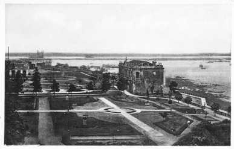

Mother of cities, because from this place the Spaniards whose expeditions went with the indigenous people went out to conquer and found new lands.
In this place the Spanish met the Guarani Indian, with whom he was able to negotiate his permanence in peaceful lands, the Spanish had difficulty expanding and only managed to do so by negotiating with the Guarani, thus the mestizos were born.
Pre Colonial This area was initially occupied by the Guarani, who according to the historian Fulgencio R. Moreno the Guarani denomination means "war".
Those Guarani had nomadic and ferocious tribes as neighbors, above such, the Guarani were constituted by their greater solidarity, organization and intellectual development.
Alejo García passed through the region of Paraguay in 1524, he would be the first European to pass through the Eastern region and reach the Chaco. In pursuit of this news Sebastián Gaboto moved, shortly after his route to the Moluccas and arrived in Paraguay. With the news of riches that were in the new world, the great expedition of Don Pedro de Mendoza departed from Spain, arriving at the place where the first foundation of Buenos Aires was made, in the year 1536.
García and Gaboto had explored the rivers above the Paraná. The great river was called indistinctly "Río Paraguay and Río de la Plata", as soon as possible Mendoza dispatched an expedition under the command of Juan de Ayolas, to go up the river, searching busily for the famous mountains mentioned above.
Colonial period On August 15, 1537, it was founded as a military fort by Juan de Salazar y Espinosa. The founding act was dated September 16, 1541, when its council was instituted by Lieutenant Governor Domingo Martínez de Irala, an act that elevated it to the category of city.
Where the city is located today was initially inhabited by indigenous people from the Carios family. The fort called Nuestra Señora de la Asunción was founded on August 15, 1537 by Juan de Salazar de Espinosa, who had just gone in search of Ayolas.
Independent Period On May 14, the road to independence began, led by Captain Pedro Juan Caballero, the heroes placed eight cannons in front of the house of Governor Bernardo de Velasco, who surrendered.
During the government of José Gaspar Rodríguez de Francia, most of the center was demolished to rebuild the urban plan in the form of a grid. After the War of the Triple Alliance, Asunción was occupied by Brazilian and allied troops since January 1869, the Allied occupation, in this case that of the Brazilian army, would last until 1876.
20th century to the present The “Defensores del Chaco” stadium owes its name precisely to the fact that the army that would go to defend the Chaco was recruited in this place.
Since 1993, Asunción has become an autonomous municipality administered as a capital district and is not formally integrated into any department.